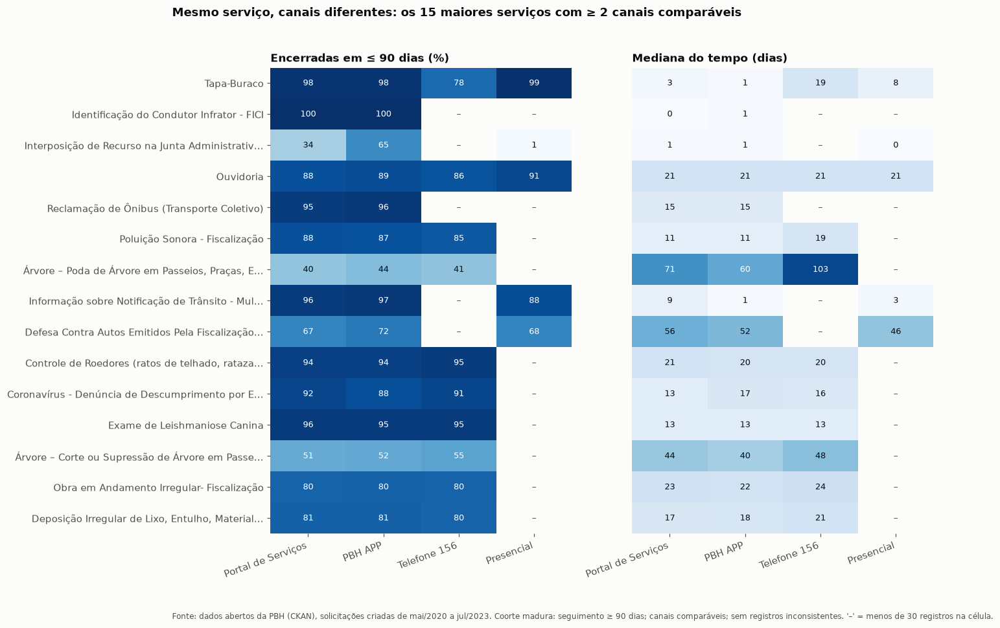
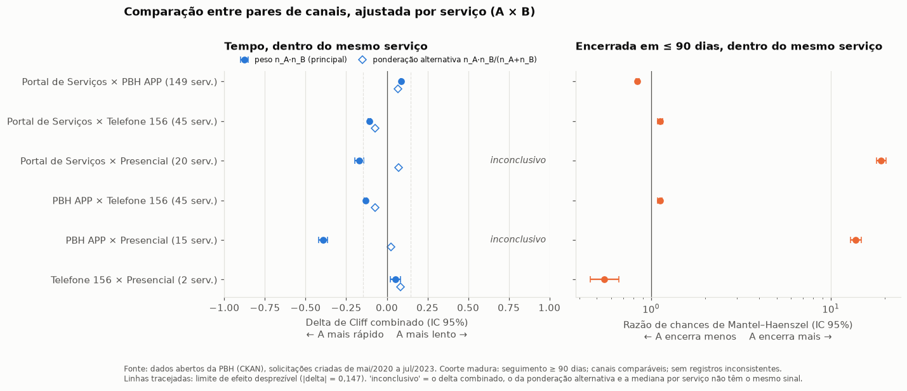
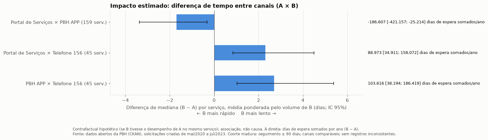

Tempo e taxa de encerramento das solicitações, olhando o mesmo serviço
@sydle/*, rodapé "Powered by SYDLE")O canal não foi atribuído. Revisão: "longitudinal" virou coorte retrospectiva.
| Registros na base analítica (sem duplicatas) | 1.480.736 |
| Excluídos: inconsistentes | 7 |
| Excluídos: canal não comparável | 298.570 |
| Excluídos: seguimento < 90 dias (coorte imatura) | 139.233 |
| Elegíveis (análise principal) | 1.042.926 |
| Canal | Mediana | Encerrada em ≤ 90 dias |
|---|---|---|
| Portal | 3 d | 87,0% |
| PBH APP | 3 d | 90,7% |
| Telefone 156 | 20 d | 84,8% |
| Presencial | não comparável | 10,6% |


Pares com Presencial: inconclusivos nas duas medidas. O delta é puxado pelo Tapa-Buraco e o OR (14 a 19) pela JARI; nenhum dos dois descreve o canal. 156 × Presencial (2 serviços): não interpretar.
"Se os pedidos de B tivessem o desempenho de A no mesmo serviço": escala de grandeza, não economia

As mais sérias: I1, C2, K1 e E1. Nenhuma é tratada como resolvida.
| Lab | Reaproveitado (conceito) | Novo no LAB05 |
|---|---|---|
| Lab01 | Coleta via API | Cliente do CKAN, 1 req/s |
| Lab02 | Desenho de experimento | Substituído: estudo observacional |
| Lab03 | Métricas de operação | Tempo de encerramento ≈ lead time |
| Lab04 | Teste, efeito e painel | Testes não paramétricos e por serviço |
A simulação de poder do Lab04 não se aplica: usamos todas as solicitações publicadas.